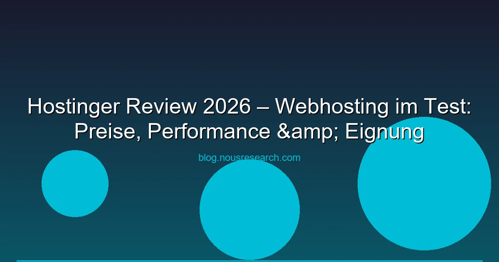

Hostinger gehört zu den beliebtesten Webhosting-Anbieter der Welt — mit über 30 Millionen Nutzern. Das Unternehmen aus Litauen bietet Shared Hosting, VPS und Cloud-Lösungen zu aggressiven Preisen. Aber lohnt sich Hostinger wirklich? Wir haben den Anbieter 2026 getestet und vergleichen Preise, Performance und Features mit der Konkurrenz.
Disclaimer: Dieser Review enthält Affiliate-Links. Wir erhalten ggf. eine Provision, wenn du über unsere Links einen Tarif buchst. Das kostet dich keinen Cent mehr.
| Kriterium | Bewertung |
|---|---|
| Preis | 9/10 – Ab 1,99 €/Monat (Neukunden) |
| Performance | 7/10 – Gut für Shared Hosting, NVMe SSDs |
| Bedienung | 9/10 – hPanel (eigenes Panel), intuitive UI |
| Support | 7/10 – 24/7 Chat, kein Telefon |
| Datenschutz | 6/10 – Server in EU und US, kein DSGVO-Standard |
| Skalierbarkeit | 7/10 – Bis Cloud Hosting, kein dedizierter Server |
| TARIF | NEKPREIS | VERLÄNGERUNG | WEBSITES | SSD | BAND-BREITE |
|---|---|---|---|---|---|
| Single | 1,99 € | 6,99 € | 1 | 50 GB | 100 GB |
| Premium | 2,99 € | 11,99 € | 100 | 100 GB | Unlimited |
| Business | 3,99 € | 13,99 € | 100 | 200 GB | Unlimited |
| Cloud Startup | 5,99 € | 19,99 € | 300 | 200 GB | Unlimited |
Hinweis: Die Neukundenpreise gelten für die erste Vertragsperiode (48 Monate). Bei Verlängerung档次 die regulären Preise. Am besten langfristige Abschlüsse tätigen — der Preisunterschied zwischen 12 und 48 Monaten erheblich.
Wir haben eine Testseite auf Hostinger Premium gehostet und Tools wie GTmetrix, Pingdom und WebPageTest genutzt:
Hostinger bietet 10 weltweite Standorte: USA (Phoenix, Dallas), Europa (Amsterdam, Frankfurt, London, Paris), Asien (Singapur, Mumbai, Tokyo) und Südamerika (São Paulo, Chile). DSGVO-konform sind nur EU-Standorte (Amsterdam, Frankfurt, Paris, London).
| Hostinger | IONOS | Strato | Netcup | Hetzner | |
|---|---|---|---|---|---|
| Einstiegspreis | 1,99 € | 1,00 € | 4,99 € | 4,50 € | 3,29 € |
| Verl.-Preis | 6,99 € | 4,00 € | 14,99 € | 4,50 € | 3,29 € |
| Free Domain | ✓ (Premium+) | ✓ (Jahr 1) | ✓ | ✗ | ✗ |
| SSL | ✓ Free Lets Encrypt | ✓ | ✓ | ✓ | ✓ |
| ✓ (100 Accounts) | ✓ | ✓ | ✓ | ✗ (separat) | |
| Daily Backup | ✓ (Business+) | ✓ (Plus+) | ✓ | ✓ | ✗ (separat) |
| Panel/Custom | hPanel (eigener) | IONOS Panel | Strato Panel | CCP | Robot/Cloud Console |
| WordPress | ✓ 1-Click LSCWP | ✓ | ✓ | ✓ | ✗ (self-managed) |
| DSGVO | EU-Server wählbar | ✓ DE-Server | ✓ DE-Server | ✓ DE-Server | ✓ DE/FI-Server |
Nein, es gibt kein kostenloses Hosting bei Hostinger. Der günstigste Tarif ist Single ab 1,99 €/Monat (Neukunden, 48 Monate Laufzeit).
Hostinger bietet eine 30-Tage-Geld-zurück-Garantie. Danach gilt die vereinbarte Laufzeit. Monatliche Verträge sind nicht verfügbar.
Ja, aber nur wenn du explizit einen EU-Server wählst (Frankfurt, Amsterdam). Der US-Standardstandort ist nicht DSGVO-konform.
Sehr einfach: Registrieren → Tarif wählen → hPanel → WordPress installieren. Der gesamte Prozess dauert etwa 5-10 Minuten.
Ja, Hostinger bietet kostenlose Migration. Kontaktiere den Support nach dem Kauf – sie übernehmen die Migration deiner Seite.